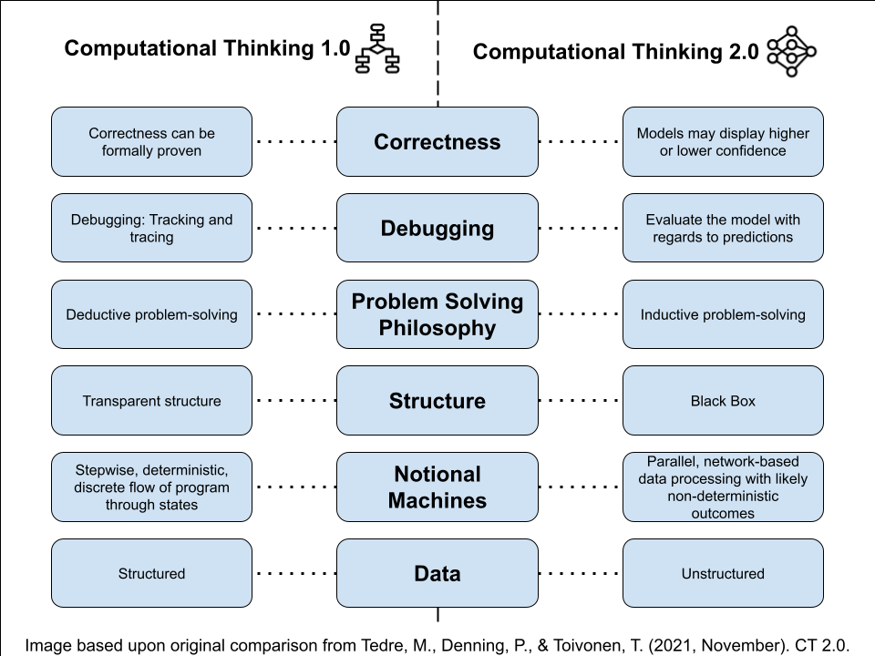

El pensamiento computacional (CT) se ha convertido en la piedra angular de la educación informática. Matti Tedre y su equipo1 presentaron recientemente el concepto CT2.0 para ayudar a los y las estudiantes a distinguir entre los enfoques tradicionales basados en reglas (CT1.0) para la resolución de problemas, y los enfoques basados en datos (CT2.0) que utilizan los sistemas de IA. A medida que los sistemas incluyen cada vez más elementos basados en reglas y en datos, es muy importante que el alumnado comprenda las diferencias y que sea capaz de trabajar con ambos paradigmas.
Summary
Conceptos clave
Solución de problemas
- El marco CT1.0 aplica enfoques basados en reglas para la resolución de problemas, como los que se utilizan en Scratch y Python.
- El marco CT2.0 presenta un cambio hacia un enfoque de la resolución de problemas basado en datos.
- La evaluación del modelo, la calidad de los datos y el sesgo se vuelven importantes en CT2.0, ya que los datos incorrectos pueden dar lugar a resultados injustos.
Corrección
- En CT1.0, la corrección se entiende como una cualidad como binaria, donde los programas producen o no resultados correctos.
- CT2.0 mide la corrección por grados, donde los modelos de aprendizaje automático generan predicciones y niveles de confianza.
Depuración
- En CT1.0, la depuración es estructurada y transparente. Los errores se solucionan siguiendo la ejecución del programa paso a paso.
- En CT2.0, los modelos de aprendizaje automático son cajas negras opacas. Los problemas se detectan mediante el análisis de los datos de entrada y salida.
- Esto requiere un cambio en la mentalidad de depuración, centrándose en mejorar los datos de entrenamiento, ajustar los parámetros y probar con una gama diversa de datos.

Solución de problemas
CT es un marco para comprender la resolución de problemas mediante la computación. El marco CT1.0 tradicional surgió a partir de los primeros conceptos informáticos utilizando un enfoque basado en reglas, en el que los programas informáticos siguen instrucciones precisas: con una entrada bien definida, se siguen instrucciones paso a paso para producir una salida predecible. En la enseñanza con CT1.0, el alumnado aprende a dividir la tarea en subtareas y a escribir instrucciones claras para cada paso antes de implementar dichas instrucciones en herramientas como Scratch y lenguajes como Python. Por el contrario, la resolución de problemas con CT2.0 cambia a un enfoque basado en datos¹. En lugar de escribir instrucciones explícitas, los y las estudiantes aprenden a recopilar, depurar, etiquetar y organizar grandes cantidades de datos relevantes. A continuación, los datos se utilizan para entrenar sistemas de aprendizaje automático (ML) con el fin de identificar patrones y producir modelos que generen predicciones y resuelvan problemas. Por ejemplo, en CT1.0, los y las estudiantes podrían crear una herramienta que clasifique gatos mediante reglas del tipo Si… Entonces aplicadas a bigotes y orejas puntiagudas. Sin embargo, con el marco CT2.0, utilizarían numerosas imágenes de gatos para entrenar un modelo con suficiente precisión. Dado que los datos son fundamentales para este proceso, la calidad de los datos, la evaluación y el sesgo se convierten en conceptos de vital importancia: los conjuntos de datos defectuosos o sesgados pueden dar lugar a resultados poco fiables o injustos. Las aplicaciones modernas combinan enfoques basados en reglas y datos: desde texto e imágenes generados mediante IA hasta software de reconocimiento facial y recomendaciones de redes sociales. Comprender las diferencias entre el marco CT1.0 y el marco CT2.0 permite al alumnado no solo trabajar de manera eficaz con estas herramientas, sino también ser participantes activos y creadores en lugar de consumidores pasivos en una sociedad cada vez más basada en datos2.
Concepto de corrección
La corrección es un concepto importante en informática y determina si un programa funciona según lo previsto. En CT1.0, a menudo enseñamos a los y las estudiantes que la corrección implica que un programa sea correcto o incorrecto. Este enfoque enfatiza la precisión, donde las instrucciones deben ser sintácticamente correctas, deben estar escritas de manera lógica y producir el resultado esperado. Los programas basados en reglas, característicos del marco CT1.0, suponen un alto nivel de transparencia: cada instrucción está escrita explícitamente y puede rastrearse, los errores se pueden identificar con precisión y se pueden probar e implementar correcciones. Con el marco CT2.0, la corrección ya no es una cuestión fija de correcto o incorrecto. Los resultados de muchos modelos de aprendizaje automático son predicciones basadas en probabilidades con distintos niveles de fiabilidad1. Por ejemplo, un modelo de aprendizaje automático podría clasificar la imagen de un gato con una puntuación de fiabilidad del 95 %. Incluso los modelos de aprendizaje automático bien entrenados, a pesar de estar entrenados con grandes cantidades de datos, pueden producir errores, sobre todo con nuevas entradas. Por ejemplo, una imagen de un gato podría clasificarse incorrectamente como un perro con una puntuación de fiabilidad del 60 %. Los desarrolladores definen niveles aceptables de corrección en el diseño y el desarrollo de modelos de aprendizaje automático. Esto requiere ajustar el proceso de entrenamiento al detalle y establecer umbrales de confianza apropiados para determinar si una predicción es aceptable para un contexto específico. Para el personal docente, este cambio en la comprensión del concepto de corrección requiere ayudar a los y las adolescentes a desarrollar habilidades de pensamiento crítico en torno a herramientas basadas en datos y sistemas de inteligencia artificial. Podríamos guiar al alumnado para plantear preguntas más profundas: “¿Qué fiabilidad ofrece esta predicción con datos nuevos?” o “¿Qué sesgos puede haber en los datos de entrenamiento?” Al enmarcar la corrección o idoneidad en CT2.0 como un proceso continuo de evaluación y depuración continua de modelos para mejorar su fiabilidad en aplicaciones del mundo real en lugar de un resultado fijo, preparamos al alumnado no solo para usar herramientas de IA, sino también para reconocer las limitaciones del sistema y los posibles daños causados por los resultados del sistema.
Depuración
La depuración es otra práctica que adopta diferentes formas en CT1.0 y CT2.0. Por ejemplo, si un programa basado en reglas implementado en Scratch o Python no funciona como se espera, los y las estudiantes pueden mostrar valores de variables, establecer puntos de interrupción o rastrear el código línea por línea hasta encontrar la raíz del problema. Debido al alto nivel de transparencia de dichos programas, podemos utilizar prácticas de depuración sistemáticas y estructuradas. Sin embargo, los modelos de aprendizaje automático a menudo se consideran como cajas negras3, y esta opacidad hace que la depuración en CT2.0 no sea tan sencilla. Los modelos de aprendizaje automático son redes complejas e interconectadas con miles de millones de parámetros que determinan los resultados y las predicciones de maneras que son imposibles de rastrear paso a paso. Cuando un clasificador de imágenes etiqueta incorrectamente una fotografía de un gato como un perro, los y las estudiantes no pueden simplemente buscar la línea de código responsable del error simplemente porque no existe ninguna. En su lugar, la tarea de depuración en el marco CT2.0 implica examinar y mejorar la calidad de los datos de entrenamiento, ajustar variables y parámetros, así como probar con una variedad de entradas diferentes para identificar patrones en los errores (por ejemplo, los gatos con orejas puntiagudas tienen más probabilidades de ser clasificados como perros). Ahora la depuración requiere que los docentes pasen de buscar errores y corregirlos a centrarse en cómo los cambios en los datos y los parámetros pueden afectar al rendimiento general.
Importancia del marco CT2.0
Sin el marco CT2.0, los y las estudiantes de hoy seguirán siendo consumidores pasivos en lugar de participantes informados en un mundo cada vez más moldeado por tecnologías de inteligencia artificial basadas en datos. La integración del marco CT2.0 en el pensamiento computacional tradicional proporciona al alumnado una comprensión precisa de los sistemas informáticos y de las diferencias que existen en la resolución de problemas, la corrección y la depuración con respecto a los sistemas basados en datos. Esto permitirá a los y las estudiantes evaluar críticamente los modelos de aprendizaje automático, comprender cómo se utilizan los datos para entrenar modelos, identificar posibles sesgos e incluso crear sus propios proyectos de aprendizaje automático. La adopción del concepto CT2.0 hace que la informática sea más realista y representativa del mundo real, ofreciendo al alumnado oportunidades más allá de la programación tradicional y hacia futuras carreras donde la alfabetización en IA es fundamental.